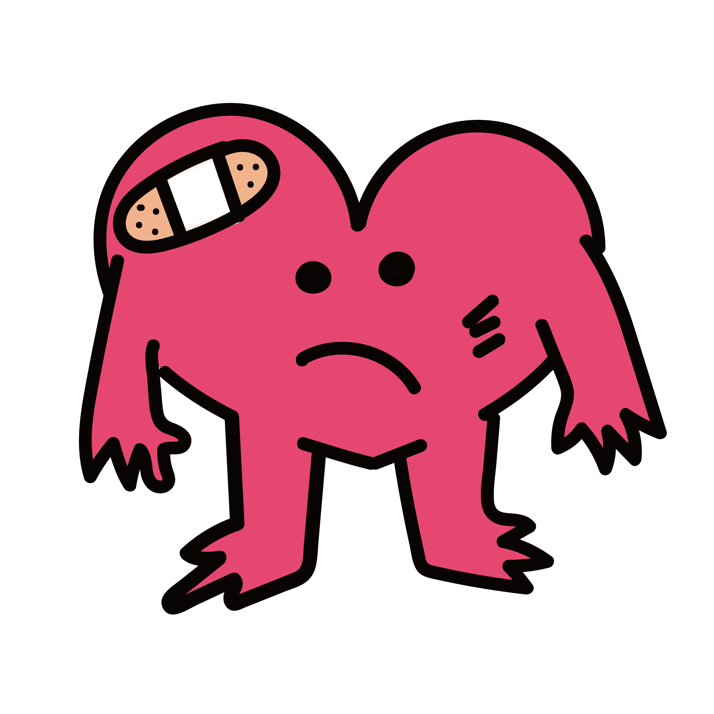

肝臟警報！建議定期檢查，注意肝指數，及早發現才不會讓疾病蔓延！
輸入參數
僅供簡易測試，精確數值請至醫療院所檢查健康報告 -
{{ form.name }}

肝病評斷: 高風險族群
補充營養不挑食，健康增重更有勁！
適量飲酒，健康長久；貪杯過量，後患無窮！
是否抽菸
否
讓呼吸更輕鬆，讓未來更美好！
運動量
2
每週150分鐘，健康輕鬆擁有！
健康從每一次的運動開始，快樂源自於身體的活力！ 久坐傷身，動起來才青春！
建議立即就醫，按時服藥，及早控制能降低併發症的發生機率。
- 控制飲食：避免高糖、高碳水化合物食物，均衡攝取蛋白質與健康脂肪。
- 規律運動：適當運動有助於穩定血糖，提高胰島素敏感性。
- 定期監測血糖：養成監測血糖的習慣，及早發現異常。
血壓
120
血壓正常：< 120/80 mmHg
保持良好飲食和運動，擁抱健康血壓！

線上保健室